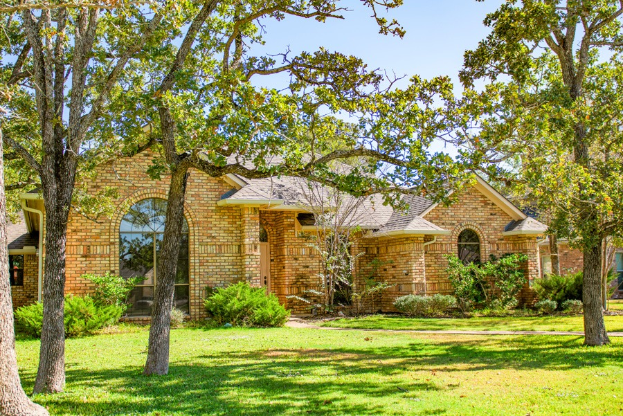

ASSOCIATION MANAGEMENT DIRECTOR
Tiffany York, CMCA, AMS
President and Association Management Director. Tiffany brings over a decade of community management experience and holds CMCA and AMS designations.
THE PEOPLE BEHIND THE PLACE / 01
Dedicated to the communities that make Bryan–College Station home.
WHO WE ARE
For over two decades, Association Services BCS has helped community associations stay organized, financially sound, and connected. What began in 1980 as AdMail's bookkeeping services for a single HOA grew into an independent community management business.
Today, we continue that foundation of stewardship with attentive service to association boards, homeowners, developers, Realtors, and community partners.
WHAT GUIDES US
We see what needs to be done, take initiative, and follow it through.
We honor the trust placed in us—finances, property, information, and relationships.
We listen first and work alongside each association to serve its particular needs.

FROM OUR COMMUNITIES / COPPERFIELDOUR HISTORY
AdMail begins bookkeeping for one homeowners association.
Association Services BCS earns a reputation for precise records, responsive service, and value.
A dedicated local team supports communities, their boards, and homeowners.
MEET THE TEAM
A hands-on group focused on communication, education, and thoughtful community operations.
President and Association Management Director. Tiffany brings over a decade of community management experience and holds CMCA and AMS designations.
Detail-driven support for association enforcement processes, communication, and client needs.
Helping homeowners and boards understand governing documents through consistent communication.
PARTNERS IN YOUR COMMUNITY